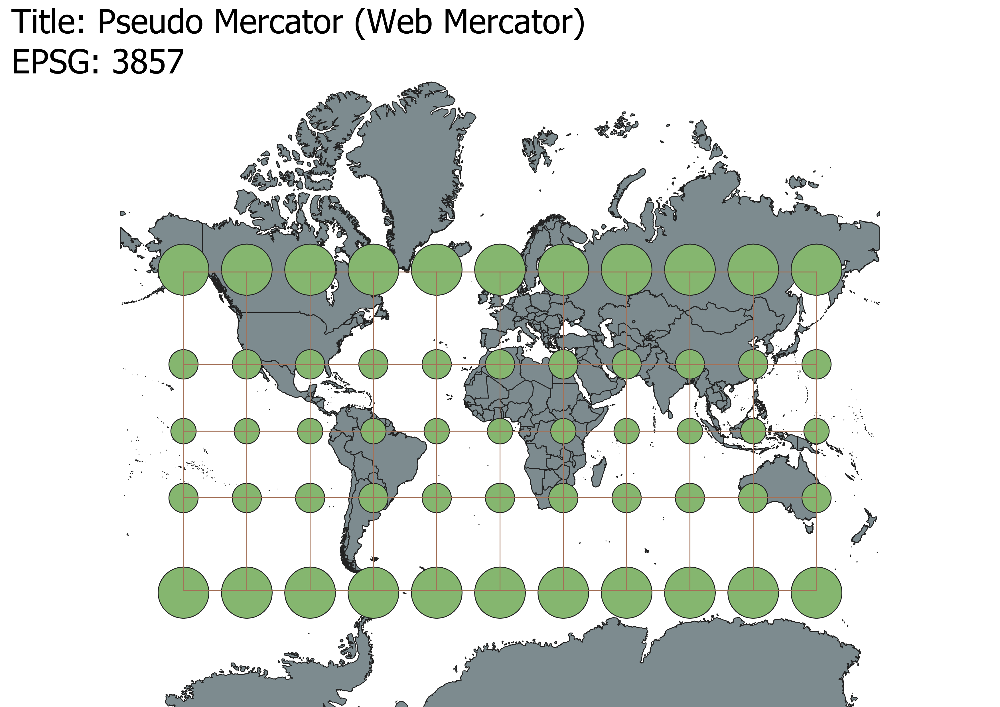
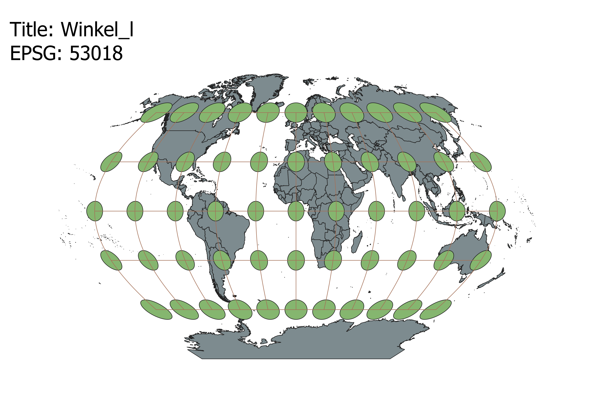
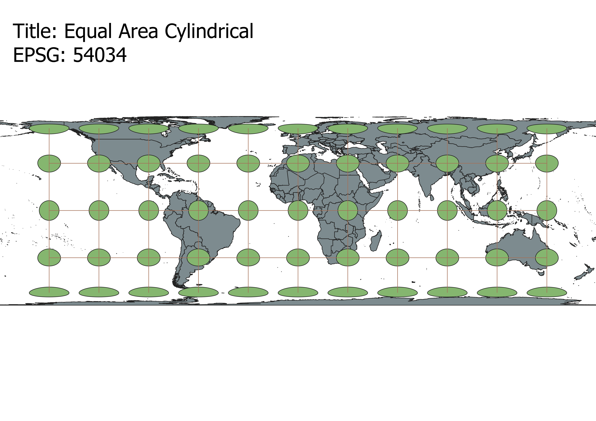
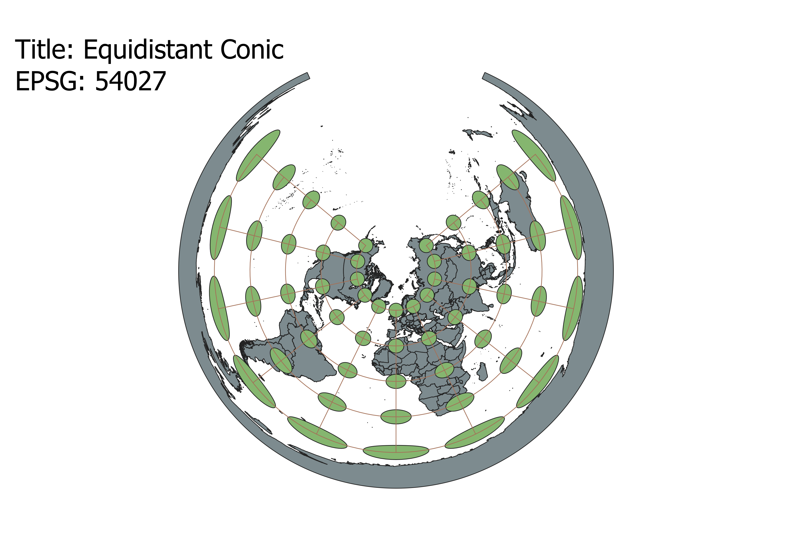
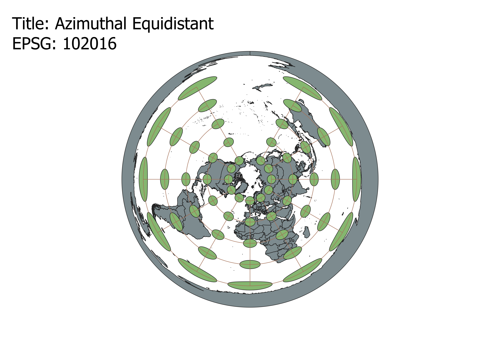
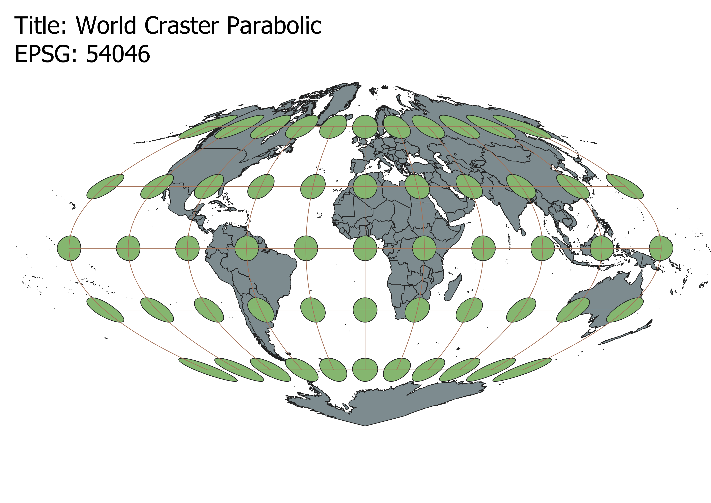
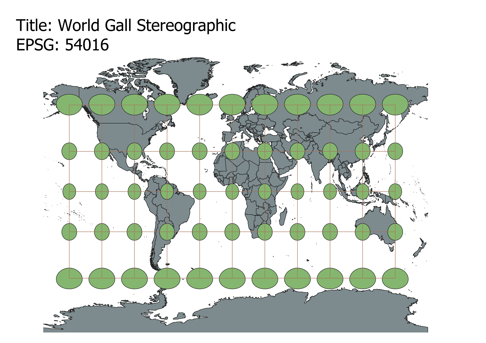

In this project I learned how to display images in different projections
After importing a vector of the world projections map, I clicked on the EPSG tab on the very bottom right of the QGIS
program which is what shows the current CRS (Coordinate Reference System). After opening the tab, I then would type
ESRI or EPSG numerical code into the filter box in order to find the correct map projections. Then I would click on
the correct name for the numerical code and hit the "apply" button in the bottom right of the pop up screen. After
hitting apply, I would select ok and then I could see the new map projection. I repeated this step until I found all
of the maps I needed!
WGS84 Projection
This projection maintains the correct proportions of the earth near the equator, but as it moves towards the poles
the countries become increasingly distorted. This can be seen when looking at the indicatrix map circles: the ones
at the equator are small and perfectly circular, and the ones at the poles are large and elipitc in shape. This means
that some countries, such as Greenland, appear much larger in this projection than they actually are.

Aitoff Projection
This projection is an eliptical projection of the earth where the center of the ellipse presents the correct proportions
of the countries, and proportions become increasingly distorted when moving away from the direct center. This can be seen
when looking at the projection because the center indicatrix circle is a perfect circle, and all of the others are
increasingly distorted ellipses. In this projection, the only countries that are close to their actual size are those off
the west coast of Africa because they are closest to the projections center indicatrix circle.

Psuedo Mercator Projection
This projection does not distort the shape of the countries, but instead distorts their size making them much larger depending
on their distance from the equator. This can be seen when looking at the indicatrix circles: all of the points maintain a
perfectly circular shape, but they becoming increasingly larger the further away they are from the equator. In this projection,
countries along the equator such as Venezuela are correct in size and shape, and countries closer to the poles such as Russia
are correct in shape but much larger in size than they actually are in real life.

Winkel_l Projection
This projection maintains the relative shape of the countries but does slightly distort their sizing. This can be seen by looking
at the indicatrix circles: the circles along the equator are relatively small and sligthly eliptical, and the circles further
from the equator become increasingly eliptical and larger in area.

Equal Area Cylindrical Projection
This projection distorts both the size and the shape of all of the countries in the map, but maintains the correct area. This can
be seen by looking at the indicatrix circles: the circles closest to the equator are perfectly circular, and they become increasingly
eliptical as they move away; however, the circles do maintain the same area no matter where they are.

Equidistant Conic Projection
This projection maintains the shape, area, and relative size of the countries that are closest to the North Pole, and increasingly
distorts the shape, area, and size of the countries further away. This can be seen when looking at the indicatrix circles: the circles
closest to the north pole are small and completely circular, and as the circles move further from the North Pole they become
increasingly eliptic and larger in size/ area.

Azimuthal Equidistant Projection
This projection is similar to the one above in that it maintains the size, shape, and area of the countries closest to the North Pole,
however in the projection the area of the indicatrix circles increase at a greater rate than the above projection. This leads to a
complete closure of the Antarctic continent at the very edge of the map.

World Craster Parabolic Projection
This projection only maintains the size, shape, and area of the countries that fall on the equator or prime meridian lines. This can
be seen by the indicatrix circles: the circles along the prime meridian maintain their area and circular shape, and the circles become
increasingly large and eliptical as they move away from the two axes.

World Gall Stereographic Projection
This projection is similar to the WGS84 projection, but has slightly less distortion regarding the size and the shape. The indicatrix
circles are perfectly circular on the lattitude lines of the Tropic of Capricorn and the Tropic of Cancer, but become increasingly
larger and slightly more eliptical in shape as they move away from those two lattitudes. This means that the best preserved countries
on this map are the ones that fall on the two Tropic lines.

Data used for this project
Download Natrual Earth 1:10m Cultural Vector